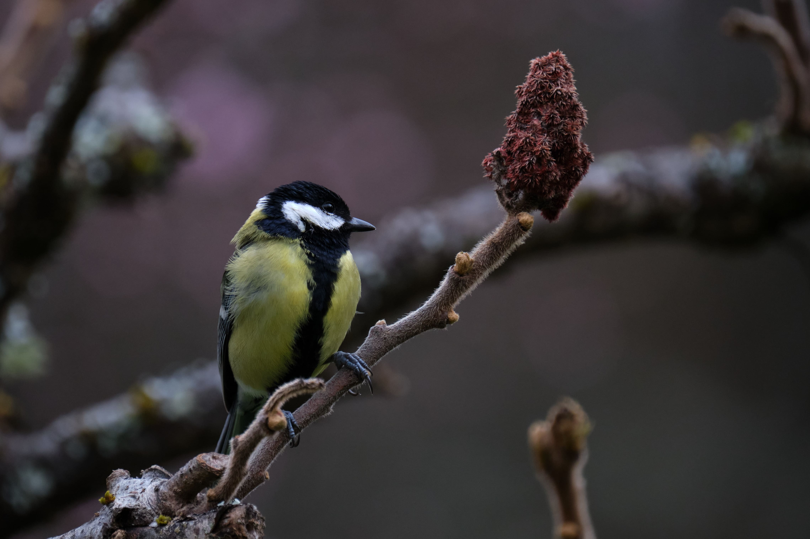

Research
This section is divided into Publications, Talks, Posters, Awards and Software development.
Publications
Articles submitted for publication...
Harmful self-pollination drives gynodioecy in European chestnut, a self-incompatible tree
C. Larue and R. Petit
American Journal of Botany
Chestnut reproductive biology and orchard design
C. Larue and R. Petit
Insect pollination in chestnut: an organized mess?
C. Larue and R. Petit
2023
Strong pollen limitation in hybrid chestnuts (Castanea sp.) orchards: Forest trees cannot compensate for the lack of pollen donors
C. Larue and R. Petit
Annals of Forest Science. In press
[Not yet available]
Adaptive function of duodichogamy: Why do chestnut trees have two pollen emission peaks?
G. Pauly, C. Larue and R. Petit
American Journal of Botany. In press
[Online]
2022
Sexual interference revealed by joint study of male and female pollination success in chestnut
C. Larue, E. Klein, and R. Petit
[Online][PDF]
Confirmation that chestnuts are insect-pollinated
R. Petit and C. Larue
[Online][PDF]
2021
De la pollinisation à la formation des graines : le cas du châtaignier
C. Larue
[Online][PDF]
An intensive study plot to investigate chestnut tree reproduction
C. Larue, T. Barreneche and R. Petit
[Online][PDF]
Development of highly validated SNP markers for genetic analyses of chestnut species
C. Larue, E. Guichoux, B. Laurent, T. Barreneche, C. Robin, M. Massot, A. Delcamp and R. Petit
Conservation Genetics Resources
[Online][PDF]
Efficient monitoring of phenology in chestnuts
C. Larue, T. Barreneche and R. Petit
[Online][PDF]
Revisiting pollination mode in chestnut (Castanea spp.): an integrated approach
C. Larue, E. Austruy, G. Basset and R. Petit
[Online][PDF]
2020
Microhaplotype genotyping-by-sequencing of 98 highly polymorphic markers in three chestnut tree species
B. Laurent, C. Larue, E. Chancerel, E. Guichoux, R. Petit, T. Barreneche, C. Robin and O. Lepais
Conservation Genetics Resources
[Online][PDF]
Sixty Years from the First Disease Description, a Novel Badnavirus Associated with Chestnut Mosaic Disease
A. Marais, S. Murolo, C. Faure, Y. Brans, C. Larue, F. Maclot, S. Massart, M. Chiumenti, A. Minafra, G. Romanazzi, M. Lefebvre, T. Barreneche, C. Robin, R. Petit and T. Candresse
[Online][PDF]

Talks
Chestnut reproductive biology and orchard design
La pollinisation du châtaignier : de surprises en découvertes
Pollinisation et conception de nouveaux vergers de châtaigniers
Self-interference revealed by joint study of male and female pollination success in chestnut
De la pollinisation à la formation des graines : le cas du châtaignier
La pollinisation des châtaigneraies
Is self-pollen interference the cause of chestnut gynodioecy?
Pollination and fruit production in sweet chestnut
Rôle des insectes dans la pollinisation du châtaignier
Role of insects in chestnut pollination
Les outils biomol pour aider dans la caractérisation et le choix variétal

Posters
Insect pollination in chestnut
[PDF]

Awards
Dordogne-Périgord Sustainable Development Awards

Software development
Monte Carlo estimation and exact computation of overlapping canopied areas
C. Larue, J. Schoeters
Java program computing canopied areas covered by given buffer zone
Available on Github here
Visualization using JBotSim of the Monte Carlo method shown here
2021
Automatic analysis of large DNA genotyping data
C. Larue, J. Schoeters
Java program analyzing Excel DNA data files for potential mismatches of parent/child associations
Available on Github here
2020